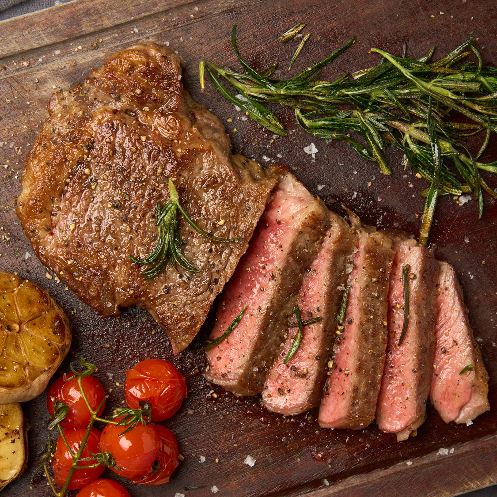

New York Strip Steaks
Air FryerYou can enjoy this delicious cut of beef in less than 15 minutes when using the Dome Air Fryer. We like to serve this tasty steak with our air fried French fries for Steak Frites in less than 30mins.
Ingredients
New York Strip Steak
2 eachKosher Salt
1 tspBlack Pepper
20 turnsOlive Oil
2 tbspEquipment
Dome Air Fryer
Tongs
Kitchen Paper
Steps 1 / 8
Thoroughly Dry the New York Strip Steaks
Using a kitchen paper, thoroughly dry each of the steak. Drying the steaks will help in developing a delicious golden brown sear when cooking.
Steps 2 / 8
Season the Steaks
Start by evenly coating each steak with olive oil. Generously season each steak with kosher salt and freshly cracked black pepper.
Steps 3 / 8
Preheat the Typhur Dome
Preheat the Typhur Dome to 450°F/230℃. (Around 5 minutes)
Steps 4 / 8
Add the Steaks to the Typhur Dome
After the Typhur Dome has finished preheating, carefully place the steaks in the cooking tray and return them back to the Typhur Dome.
Steps 5 / 8
Cook the New York Strip Steaks
For thicker steaks, you may need to add a few more minutes of cooking time. We recommend checking the internal temperature of your steak with an instant-read thermometer until it has reached your desired doneness.
Steps 6 / 8
Remove the New York Strip Steaks from the Typhur Dome
Using a pair of tongs, carefully remove the steaks from the Typhur Dome to a plate or serving tray.
Steps 7 / 8
Allow the Steaks to Rest
Before slicing, allow the steaks to rest for 5 minutes.
Steps 8 / 8
Serve and Enjoy!
We like to pair this tasty steak with golden brown and crispy french fries for Steak Frites in under 30 minutes. Bon Appétit!
Parameters
ModeAir Fry
Temperature200°C
Time25min